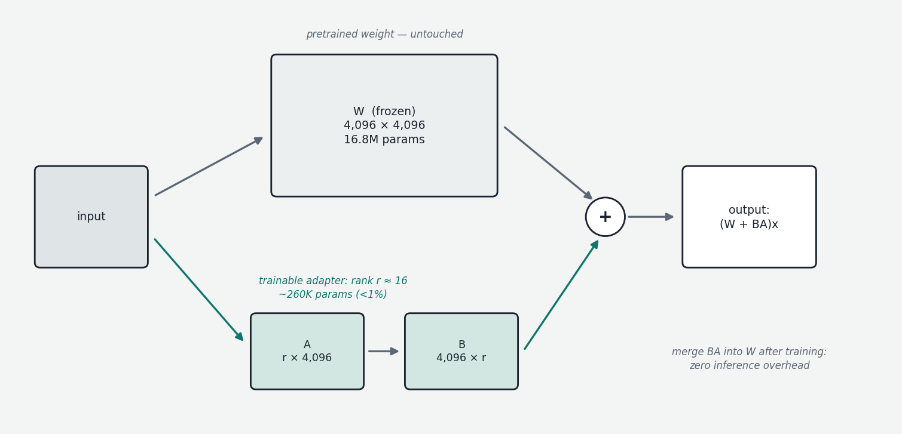
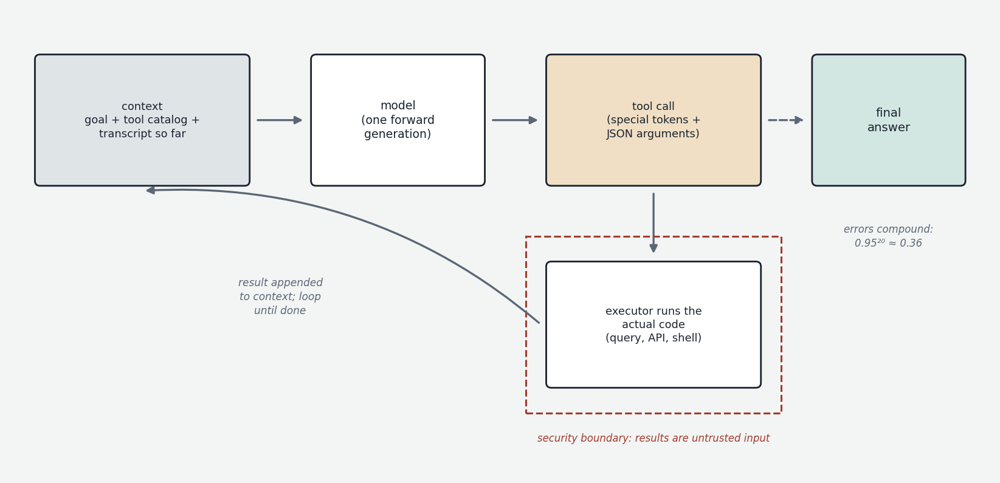

A trained model is a fixed artifact: frozen weights, a knowledge cutoff, a general-purpose disposition. Nearly every real application needs to specialize or extend it — with private data, domain behavior, current information, or the ability to act. There are exactly four mechanisms for doing this, in ascending order of invasiveness: put it in the prompt; retrieve it into the prompt automatically; let the model call out to tools; or change the weights. This chapter covers all four, with emphasis on the engineering judgment of which to use when — the single most common architectural mistake in applied LLM work being the choice of fine-tuning for problems that wanted retrieval, or vice versa.
The decision framework first
A clarifying heuristic: fine-tuning changes behavior; retrieval changes knowledge. Fine-tuning is the right tool when the model should act differently — follow a house output format, adopt a domain register, reliably perform a narrow task, internalize patterns too numerous or subtle to specify in a prompt. It is a poor tool for adding facts: a few thousand fine-tuning examples cannot durably implant knowledge the way trillions of pretraining tokens did, the model will half-learn facts and hallucinate confidently around the edges, and the data goes stale the day after training. Conversely, retrieval excels at facts — current, private, voluminous, verifiable-by-citation — and does nothing for behavior. Prompting handles both, up to the limits of context length and instruction-following reliability, and since it costs nothing to iterate, the correct engineering order is almost always: exhaust prompting first, add retrieval when the knowledge doesn't fit, fine-tune only when behavior still falls short. The options also compose; mature systems typically use all of them.
Changing the weights: fine-tuning and LoRA
Full fine-tuning — resuming the Chapter 1 training loop on your own data, updating every parameter — works but is heavyweight: training-scale memory (recall ~16 bytes per parameter of optimizer state), a full model copy per variant, and a real risk of catastrophic forgetting, where narrow training degrades general ability.

The technique that made adaptation accessible is LoRA (Low-Rank Adaptation, 2021). The premise: the change a fine-tune needs to make to a weight matrix is far simpler than the matrix itself — it has low rank, meaning the update matrix, though dimensionally huge, can be expressed as the product of two thin matrices. So instead of updating a 4,096×4,096 weight matrix W directly, freeze W entirely and learn two small matrices: B (4,096×r) and A (r×4,096), with the rank r typically 8–64, and let the effective weight be W + BA. At r=16, the trainable parameters for that matrix drop from ~16.8 million to ~131 thousand — under 1% — and the same applies across every adapted matrix in the model. Training memory collapses (no optimizer state for frozen weights), the adapter — the collection of A and B matrices — is a file of tens of megabytes rather than tens of gigabytes, and at deployment the product BA can be merged into W ahead of time, making inference exactly as fast as the original model. Adapters can also be kept separate and hot-swapped: one base model in memory, many cheap personalities. QLoRA (2023) extends the economics further by keeping the frozen base in 4-bit quantization (Chapter 6) while training the adapters in 16-bit, bringing fine-tuning of large models within reach of a single big-memory machine — including, practically speaking, the unified-memory class via the MLX training stack. The discipline that matters more than the mechanics: always evaluate a fine-tune on general tasks as well as the target task, because the failure mode is silent — the model gets better at your thing while quietly getting worse at everything else.
Retrieval-augmented generation
RAG (retrieval-augmented generation) automates "put it in the prompt": index a document corpus, fetch the pieces relevant to each query, and prepend them to the prompt so the model answers from the supplied text rather than from parametric memory. The load-bearing component is the embedding model — a separate, small transformer trained (by contrastive methods on pairs of related texts) to map any passage to a single vector such that semantically related texts land near each other. This is the conversation's earlier geometry-of-meaning idea applied at the passage level rather than the token level. Indexing means: split documents into chunks (a few hundred tokens each — chunking granularity is an unglamorous decision that dominates quality), embed every chunk, store the vectors. Querying means: embed the question, find the nearest chunk vectors (at scale via approximate nearest neighbor indexes such as HNSW; at small scale a brute-force scan in SQLite is honestly fine), and hand the winning chunks to the model.
Production systems layer refinements onto this skeleton because each addresses a known failure: hybrid search combines vector similarity with classical keyword matching (BM25), since embeddings are weak on exact identifiers — ticker symbols, error codes, part numbers — that keyword search handles trivially; a reranker (a slower model that reads query and candidate together) re-scores the top candidates, since cheap first-stage retrieval is recall-oriented and imprecise; and citation prompting forces answers to reference specific chunks, making the system auditable. The structural truth about RAG: its ceiling is the retriever, not the model. When a RAG system answers badly, the cause is usually that the right chunk was never retrieved — no model can answer from text it wasn't shown — so debugging effort belongs on the retrieval side. The rise of very long context windows has narrowed RAG's domain (corpora that fit in a prompt can simply be prepended, especially with prefix caching amortizing the cost) but not closed it: at corpus scale, retrieval remains the only option, and selective context is often more accurate than a stuffed one, given models' documented tendency to attend poorly to the middle of very long inputs.
Tool use: the actual mechanics
Tool use (function calling) is routinely described mystically; the mechanics are mundane and worth seeing plainly, because they make agent behavior legible. The model never executes anything. The orchestration loop works like this: the system prompt includes machine-readable descriptions of available tools (names, parameters, schemas). The model, mid-generation, can emit a tool call — a structured block, delimited by special tokens from its chat template (the same mechanism as role markers), containing the tool name and JSON arguments. The serving layer detects the block, stops generation, and hands the call to the surrounding application, which executes the actual code — the database query, the API request, the shell command — and appends the result to the conversation as a new message. Generation resumes; the model now sees the result in its context and continues, perhaps calling another tool, perhaps answering. The capability is trained in during post-training (Chapter 3) on demonstrations of correct tool selection, argument formation, and result interpretation; constrained decoding (Chapter 7) can guarantee the call syntax. Everything the model "does" in the world reduces to this: emit structured text, wait, read the result.

An agent is nothing more than this loop given autonomy: a goal in the prompt, a tool catalog, and permission to iterate — act, observe, decide, act again — until done, with the conversation transcript serving as the agent's working memory. The Model Context Protocol (MCP) is the emerging standard plumbing for it: a uniform protocol by which any server can expose tools and data sources to any model-driven client, replacing per-integration glue. The engineering realities of agents follow directly from the mechanics: errors compound across steps (a 95%-reliable step yields ~36% reliability over twenty steps), context fills with accumulated tool output and degrades attention (hence summarization and pruning strategies — context engineering is the emerging name for this discipline), and the tool boundary is a security boundary — tool output is untrusted input that can carry adversarial instructions (prompt injection), so anything touching real systems, credentials, or money wants sandboxing, allow-lists, spending limits, and human confirmation gates. Reasoning training (Chapter 4) is what has made agents genuinely useful: deciding when to call a tool and recovering from failed calls is precisely the explore-check-backtrack behavior RLVR instills.
The picture to keep
Four mechanisms, one decision rule. Prompting first, always — it is free to iterate. Retrieval when the model lacks knowledge: an embedding-based index feeding relevant chunks into context, with quality capped by the retriever, hybridized with keyword search for exact identifiers. Tool use when the model must act or fetch live state: structurally just special-token-delimited JSON, an external executor, and results appended to context — and an agent is this loop iterated, with compounding-error, context-hygiene, and injection-security as the costs of autonomy. Fine-tuning — in practice LoRA or QLoRA, cheap, mergeable, swappable — when the model's behavior is wrong and examples can show the right one. Knowledge problems get retrieval; behavior problems get tuning; action problems get tools; and most real systems get all four.